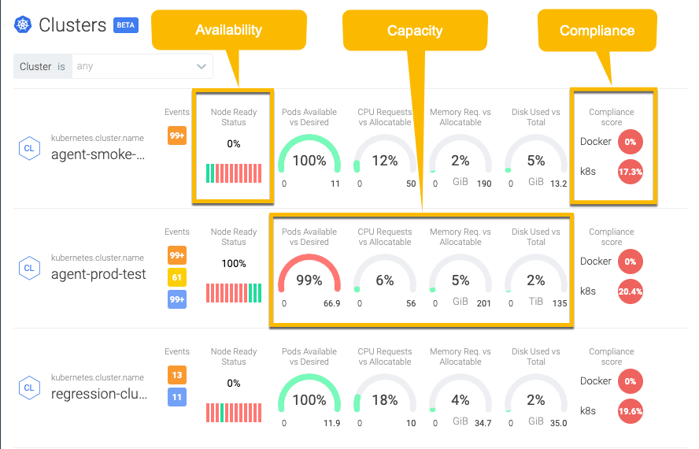
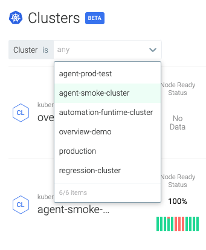
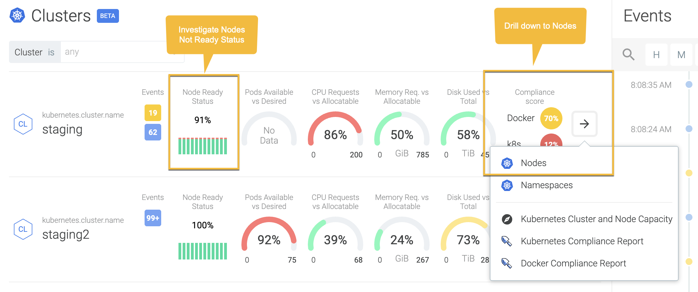
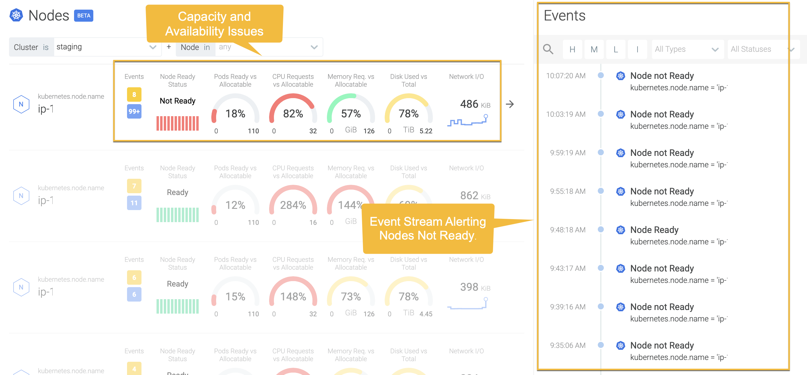
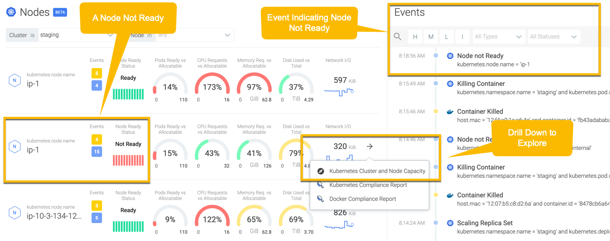
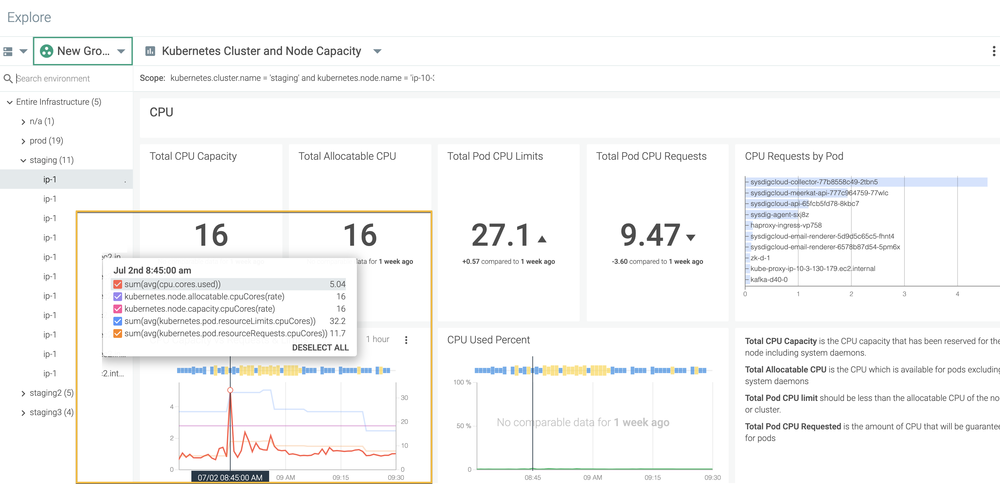

Clusters Overview
In Kubernetes, a pool of nodes combine together their resources to form a more powerful machine, that is a Cluster. The Cluster Overview page provides key metrics indicating health, risk, capacity, and compliance of each cluster.Your cluster can reside in any cloud or multi-cloud environment of your choice.
Each row in the Clusters page represents a cluster. Clusters are sorted by the severity of corresponding events in order to highlight the area that needs attention. For example, a cluster with high severity events is bubbled up to the top in the page to highlight the issue. You can further drill down to the Nodes or Namespaces Overview page for investigating at each level.
|  |
Scope
The scope of Cluster Overview is dictated by Cluster. The OR operator is applied to the Clusters field, narrowing down the scope to one of the Clusters in your Kubernetes environment.
|  |
Understanding Metrics
Description | Color Scheme | Example | Metrics | |
|---|---|---|---|---|
Ready Status | Represented as Node Ready. Shows the latest value of | Red: Nodes are unhealthy. Green: Nodes are healthy. The number indicates the latest value returned by In the first image, it is 0%. In the second image, it is 100% ready. The 12 blocks in the Nodes Ready Status represent 12 samples indicating the past status in a selected time window. For a selected period, say an hour, nodes are split into 12 different samples, each one indicating the status for 5 minutes. In the image above, Node Ready Status shows that at the16th-minute nodes were briefly down, then they went down again between 25-40th minute. After the 15 minutes downtime, nodes came back to a healthy state. | 75% indicates the latest value of the metrics across the cluster is 0.75. | The latest value returned by Time aggregation is Minimum. Group aggregation is Average. |
Pod Guage | Represented as Pods Available vs Desired. This is the ratio between the total number of pods available and total number of pods desired for the cluster across deployments, statefulSets, and DaemonSets. | Red: The number of available pods are less than the desired number. The ratio between available and desired pods is greater than 80%. Yellow: The ratio of available and desired pods is between 60%-80%. Green: The ratio of available and desired pods is less than 60%. | Pods Available vs Desired should be 100% available. 99% indicates that out of 66 sample pods (see image), approximately 65 pods are available. Therefore indicating in red. | The ratio of Time aggregation is Average. Group aggregation is Sum. |
CPU Guage | Represented as CPU Requested vs Allocatable. This is the ratio of the number of CPU cores used and the number of CPU cores requested by each deployment. CPU gauge dictates the maximum amount of CPU that your container can use independent of contention on the node. The CPU request represents a minimum amount of CPU that a container can consume. If a container attempts to use more than the specified limit, the system throttles the container. | Red: The ratio between used and requested CPU cores is greater than 80%. Yellow: The ratio of used and requested CPU cores is between 60%-80%. Green: The ratio of used and requested CPU cores is less than 60%. | 12% indicates out of 50 CPU cores that can be allocated (see image) only 6 CPU cores are requested. | The ratio of Time aggregation is Average. Group aggregation is Sum. |
Memory Guage | Represented as Memory Requested vs Allocatable. This is the ratio between the total number of memory used and the total number of memory requested in bytes by each deployment. | Red: The ratio of requested and allocatable memoryin bytes is greater than 80%. Yellow: The ratio of requested and allocatable memory in bytes is between 60%-80%. Green: The ratio of requested and allocatable memory in bytes is less than 60%. | 2% indicates out of 190 Gib memory (see image) that can be allocated, only 3.8 Gib is requested. | The ratio of Time aggregation is Average. Group aggregation is Sum. |
Storage Guage | Represented as Disks Used vs Total. This is the ratio between the number of disks used and the number of disks requested by each deployment. | Red: The ratio of used and requested disks is greater than 80%. Yellow: The ratio of used and requested disks is between 60%-80%. Green: The ratio of used and requested disks is less than 60%. | 5% indicates out of 13.2 Gib disk space (see image) that is available, only 0.66 Gib is used. | The ratio of Time aggregation is Average. Group aggregation is Sum. |
Events | Shows the severity level and the number of events for each type of severity—High, Low, Medium, and Info—in that order. | Red: The number of events that are in High severity state Orange: The number of events that are in Medium severity state Green: The number of events that are in Low severity state Blue: The number of events that are Info. | ||
Kubernetes Cluster and Node Capacity | Takes to the Explore page for Cluster and Node Capacity. It shows clusters and nodes, an HTOP-like view of metrics like CPU, disk, memory, and network, and allow you to drill down into the environment. Color coding enables you to spot potential issues quickly. | |||
Sysdig Security Features | ||||
Kubernetes Compliance Report | Record of CIS Kubernetes benchmark test. For more information, see Compliance Dashboards and Metrics. | Red: The value is greater than 80%. Yellow: The value is between 50%-80%. Green: The value is less than 50%. | The value returned by Time aggregation is Average. Group aggregation is Average. | |
Docker Compliance Report | Record of CIS Docker benchmark test. For more information, see Compliance Dashboards and Metrics. | Red: The value is greater than 80%. Yellow: The value is between 50%-80%. Green: The value is less than 50%. | The value returned by Time aggregation is Average. Group aggregation is Average. | |
Use case - Nodes Not Ready
This section examines how to triage a Kubernetes Cluster with Nodes Not Ready status.
Investigate Nodes Not Ready
Nodes Ready Status at 91% indicates 9% nodes in the cluster are not available to serve your workload. In the image below, the graph for Node Ready Status shows 12 sets of sample nodes are partially down.To inspect the Nodes more closely, navigate to the Nodes level using the drill-down arrow. Click Nodes to open the Nodes Overview.
|  |
Investigate at the Nodes Level
As you can see, a Node is completely unavailable. The Event stream continuously alerts that it is down. The color scheme indicates that Pods availability, as well as the CPU and Disk capacity is not healthy.
|  |
To analyze further, click Kubernetes Cluster and Nodes Capacity and navigate to the Explore page.
|  |
Investigate with Explore
The Explore page highlights trends and issues related to resource usage of the selected Node.
|  |